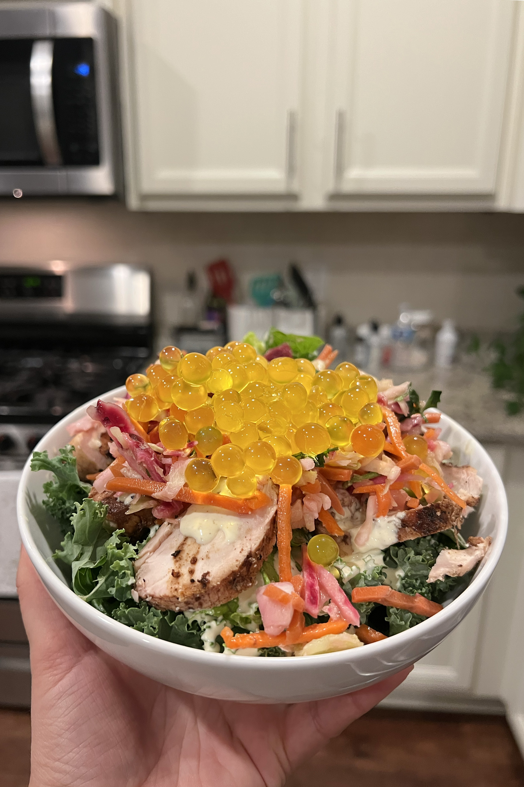

This is my copycat salad recipe from Disney's Animal Kingdom. This salad has a smokey chicken flavor, fresh greens and bursts of popping fruit juice. It's from satu'li canteen in Avitar World. It's not the easiest recipie in the world but it's definitly worth it!
